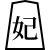
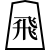
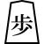

妖怪将棋の変種
王棋、別名駒妖チェスとしても知られています、は8x8のボードで遊ばれる伝統的な日本の将棋のロマンチックなバリエーションです。 このバージョンでは、
王妃駒を導入しており、チェスのナイトとビショップの動きを組み合わせ、より大胆でダイナミックなプレースタイルを促し、ゲームは通常より短くなります。王棋は将棋の基本原則を維持しながら、歴史的な起源ではなく現代の神話に包まれており、チャトランガのようによく文書化された祖先を持つゲームとは一線を画しています。 その文化的なナラティブの中心には、都市伝説があり、神話の妖怪である駒妖にゲームが関連付けられており、王棋に神秘的な魅力を与え、豊かな日本の民俗学のテープストリーの中に位置付けています。 この話が事実に基づいているかフィクションであるかにかかわらず、ゲームのコンテキストに深みを加え、戦略的なゲームプレイが神話的な物語と絡み合う世界にプレイヤーを引き込みます。
平手戦の初期配置
 |
 |
 |
 |
|
|
|
|
 |
 |
||||||
 |
|||||||
 |
|
|
|
|
|
|
|
 |
 |
||||||
 |
 |
 |
 |
 |
|
|
|
駒
北のプレイヤー
| 中国語の名前 | 英語の名前 | 日本語の名前 | 略称 | 漢字 |
|---|---|---|---|---|
| 角行 | Bishop | 角行 | b |
角 |
| 王將 | King | 王将 | k |
王 |
| 桂馬 | Knight | 桂馬 | n |
桂 |
| 香車 | Lance | 香車 | l |
香 |
| 步兵 | Pawn | 歩兵 | p |
歩 |
| 王妃 | Princess | 王妃 | i |
妃 |
| 龍馬 | Promoted Bishop | 龍馬 | +b |
馬 |
| 成桂 | Promoted Knight | 成桂 | +n |
圭 |
| 成香 | Promoted Lance | 成香 | +l |
杏 |
| 成步 | Promoted Pawn | と金 | +p |
と |
| 女神 | Promoted Princess | 女神 | +i |
神 |
| 龍王 | Promoted Rook | 龍王 | +r |
龍 |
| 成銀 | Promoted Silver General | 成銀 | +s |
全 |
| 飛車 | Rook | 飛車 | r |
飛 |
| 銀將 | Silver General | 銀将 | s | 銀 |
南のプレイヤー
| 中国語の名前 | 英語の名前 | 日本語の名前 | 略称 | 漢字 |
|---|---|---|---|---|
| 角行 | Bishop | 角行 | B |
角 |
| 玉將 | King | 玉将 | K |
玉 |
| 桂馬 | Knight | 桂馬 | N |
桂 |
| 香車 | Lance | 香車 | L |
香 |
| 步兵 | Pawn | 歩兵 | P |
歩 |
| 玉妃 | Princess | 玉妃 | I |
妃 |
| 龍馬 | Promoted Bishop | 龍馬 | +B |
馬 |
| 成桂 | Promoted Knight | 成桂 | +N |
圭 |
| 成香 | Promoted Lance | 成香 | +L |
杏 |
| 成步 | Promoted Pawn | と金 | +P |
と |
| 女神 | Promoted Princess | 女神 | +I |
神 |
| 龍王 | Promoted Rook | 龍王 | +R |
龍 |
| 成銀 | Promoted Silver General | 成銀 | +S |
全 |
| 飛車 | Rook | 飛車 | R |
飛 |
| 銀將 | Silver General | 銀将 | S | 銀 |
注記：
王棋において、伝統的な将棋とのユニークな違いは、王妃
として知られる特別な駒にあります。
この駒はゲームの戦略的な核心を体現しており、チェスのナイトとビショップの動きを組み合わせています。
ナイトのように、プリンセスは他の駒を飛び越え、L字形に、一方向に2マス、その後垂直に1マス動くことができます。
同時に、ビショップの能力を採用し、任意の数の空マスを斜めに移動することができます。
この二重の能力は、プリンセスに8x8の盤上で比類のない多様性を与え、ゲームの中心的で強力な要素にしています。
ルール
伝統的な将棋との主な違い：
- 盤のサイズ：王棋は8x8の盤でプレイされ、将棋で使われる標準の9x9の盤とは異なります。
- プリンセス駒：王棋でのユニークな追加はプリンセス駒で、チェスのビショップとナイトの動きを組み合わせ、強力かつ多用途な駒にしています。
- 昇格の義務：
- 王棋では、駒の昇格が義務付けられています。このルールはプリンセスを含む全ての駒に適用されます。
- 昇格時、プリンセスはその既存の能力に加えて、王の動きの能力を獲得します。
- 王棋のポーンによるチェックメイト：王棋では、伝統的な将棋にはないユニークな特徴として、王棋のポーンを置くことでチェックメイトが可能です。
注記： 王棋での他のすべてのルールとゲームメカニズムは、伝統的な将棋から継承されています。 これには、駒の一般的な動き、駒の取り方、およびゲームの基本的な目標が含まれます。 これらの基本的な側面を保持しつつ、ユニークな要素を統合することで、王棋はプレイヤーにとって馴染みのあると同時に新鮮な戦略的体験を提供します。